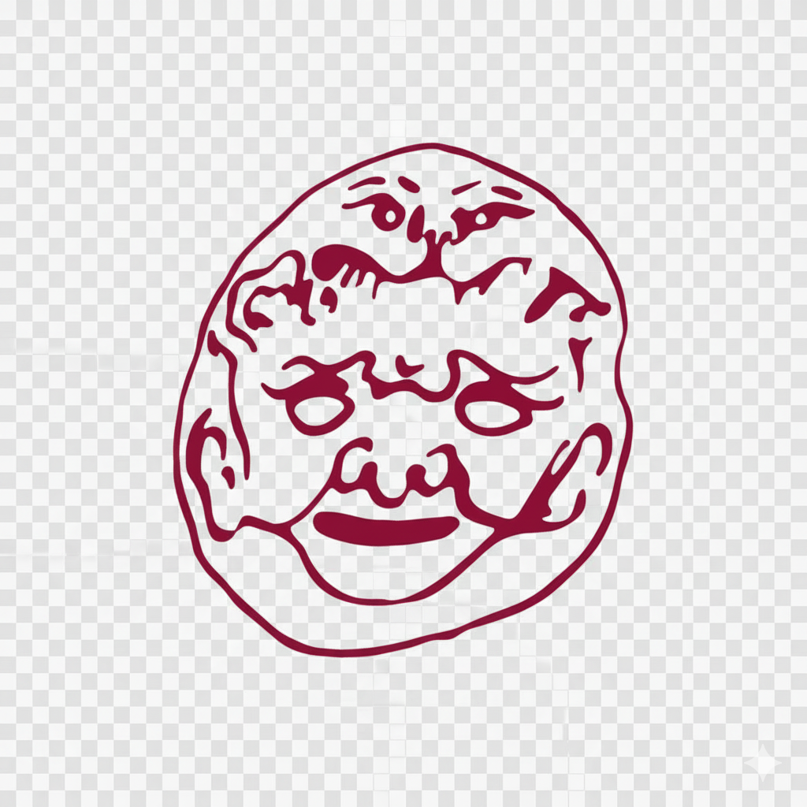

<header class="header">
    <nav class="navbar">

        <div class="logo-container">
            
            <h1 class="logo-text">U Sfriuonzolo Sotto l'Arco</h1>
        </div>
        
        <ul class="nav-links">
            <li><a href="index.html">
                <div class="mobile-icon">🏠</div> 
                <span>Home / Novità</span>
            </a></li>
            
            <li><a href="menu.html">
                <div class="mobile-icon">🍽️</div>
                <span>Il Nostro Menù</span>
            </a></li>
            
            <li><a href="post.html">
                <div class="mobile-icon">📌</div>
                <span>I nostri post</span>
            </a></li>

            <li><a href="location.html">
                <div class="mobile-icon">
                    <svg xmlns="http://www.w3.org/2000/svg" width="24" height="24" fill="none" stroke="currentColor" stroke-width="2" stroke-linecap="round" stroke-linejoin="round" class="feather feather-map-pin"><path d="M21 10c0 5-9 13-9 13S3 15 3 10a9 9 0 0 1 18 0z"/><circle cx="12" cy="10" r="3"/></svg>
                </div>
                <span>Dove Trovarci</span>
            </a></li>
        </ul>
    </nav>
</header>